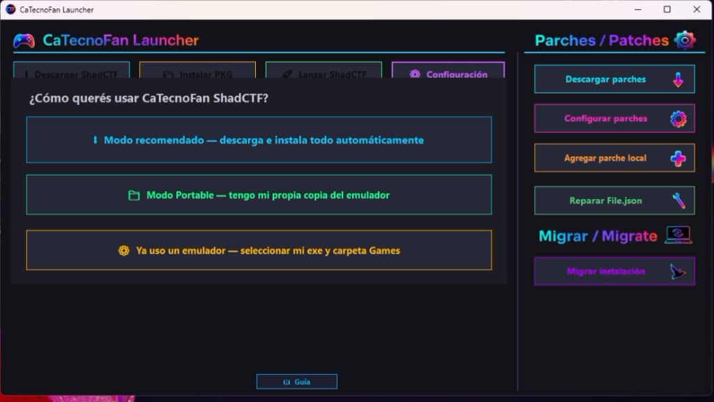
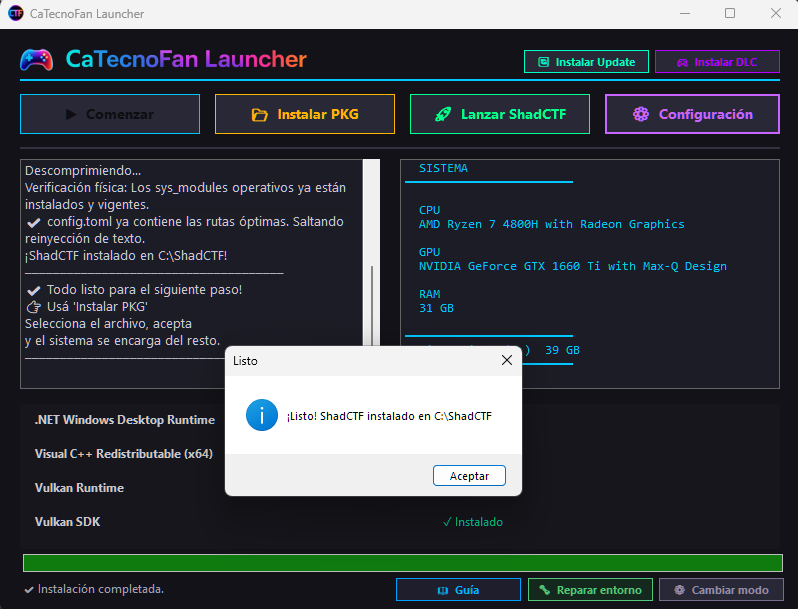
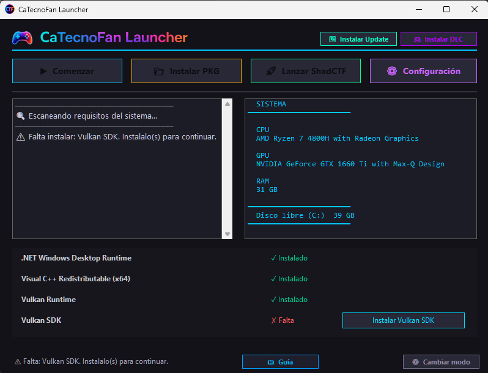
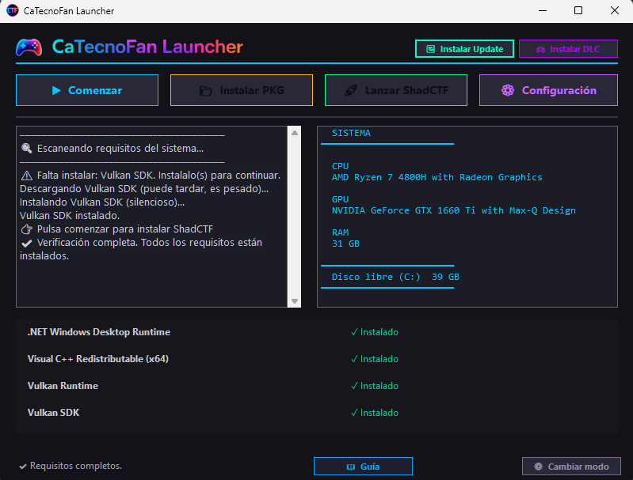
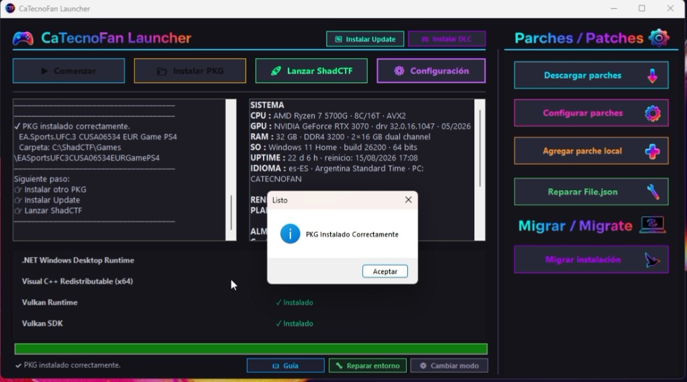
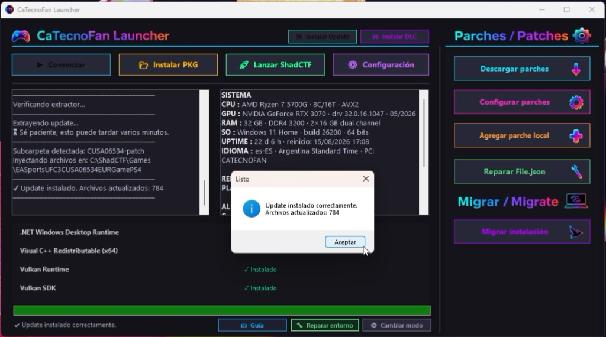
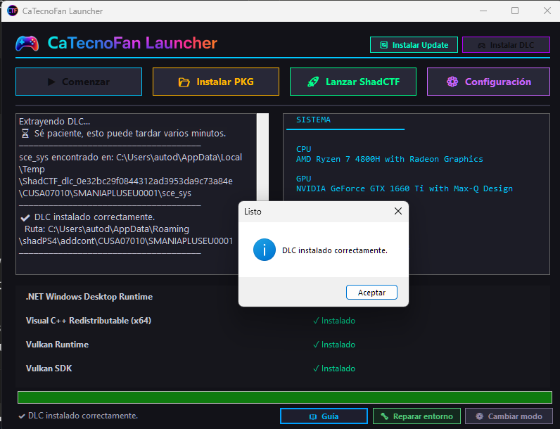
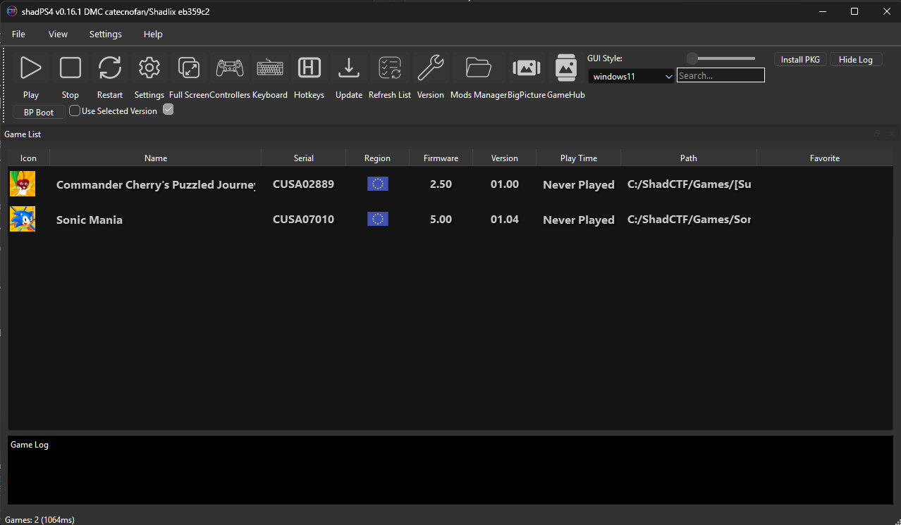
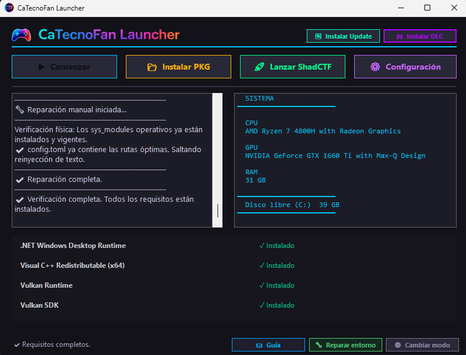

Paso a paso, función por función. Desde elegir tu modo hasta instalar tu primer juego, un update o un DLC. Si te trabaste en algo, está acá.
La primera vez que abrís el launcher, te pregunta cómo querés usarlo. Esto define dónde se instala todo y cómo se maneja el emulador de ahí en adelante.
Elegilo si no tenés nada instalado todavía. El launcher descarga el emulador, lo instala en C:\ShadCTF y configura todo automáticamente. Es la opción más simple: apretás botones y listo.

Una vez que arranca la instalación y termina, te lo confirma así:

Elegilo si ya tenés una copia del emulador descargada por tu cuenta. Vas a tener que indicarle al launcher dos cosas: el archivo .exe del emulador y la carpeta donde tenés (o vas a tener) tus juegos.
Parecido al anterior: para quien ya venía jugando con su propia configuración y no quiere que el launcher toque nada de lo que ya tiene armado. Igual que en portable, elegís tu .exe y tu carpeta de juegos.
Después de elegir modo, el launcher revisa que tengas instalado lo que el emulador necesita para correr.
Vas a ver una lista con cada requisito marcado como ✓ Instalado o ✗ Falta.
Aparece un botón individual al lado (por ejemplo "Instalar Vulkan SDK"). Lo apretás y el launcher lo descarga e instala solo, en modo silencioso.

En modo recomendado, se habilita el botón Comenzar para instalar ShadCTF. En modo portable/existente, este chequeo no bloquea nada: ya podés usar tu emulador igual.

Así se instala un juego de PS4 en formato .pkg.
Está disponible una vez que tenés el emulador listo (en cualquiera de los 3 modos).
Se abre un explorador de Windows. Buscá el archivo del juego que querés instalar.
Lee el nombre real del juego desde adentro del archivo (no del nombre del archivo), y revisa que tengas espacio suficiente en disco antes de arrancar.
Este paso puede tardar varios minutos según el tamaño del juego. Vas a ver el progreso y los mensajes en el panel de estado.
El juego queda organizado con su nombre correcto dentro de tu carpeta de Games, listo para lanzar.

Para aplicarle un parche/actualización a un juego que ya instalaste.
Este botón aparece junto a los demás una vez que tenés el emulador configurado.
Seleccioná el archivo de actualización correspondiente al juego.
Te va a pedir que selecciones, dentro de tu carpeta Games, la carpeta exacta del juego que estás actualizando. Es importante elegir la correcta.
Extrae el update y copia los archivos actualizados directo sobre los del juego, sin que tengas que mover nada a mano.

Para contenido descargable (expansiones, personajes, mapas extra, etc.).
No hace falta elegir carpeta de juego en este caso: el launcher sabe dónde va solo.
El launcher lee automáticamente a qué juego pertenece ese DLC, leyendo un identificador que trae el propio archivo.
El DLC se ubica automáticamente donde el emulador espera encontrarlo, sin que tengas que crear carpetas a mano.

Una vez que tenés el emulador y al menos un juego instalado.
Abre directamente el emulador configurado, ya sea el que instaló el launcher o el que vos elegiste en modo portable/existente.
Una vez abierto, vas a ver tu biblioteca de juegos instalados y podés arrancar a jugar.

Es el botón "arreglalo todo". Úsalo si algo dejó de funcionar bien, sin necesidad de reinstalar nada desde cero.
Si un juego deja de abrir, si notás errores raros del emulador, o simplemente para estar seguro de que la configuración interna está al día.
El launcher revisa los archivos internos que el emulador necesita para funcionar y los vuelve a dejar en orden.

Esta reparación es solo sobre archivos internos del emulador. Tus juegos instalados, tus partidas guardadas y tu configuración personal quedan intactos.
Si te arrepentiste del modo que elegiste al principio, no hace falta desinstalar nada.
Vas a ver un aviso confirmando que se va a olvidar la configuración actual (no borra juegos ni el emulador instalado).
El launcher te vuelve a mostrar la pantalla inicial para que elijas de nuevo entre recomendado, portable o existente.
Los mensajes que te puede llegar a mostrar el launcher, y qué hacer en cada caso.
.exe.Bajá el launcher y arrancá en modo recomendado. El resto ya sabés cómo hacerlo.
Ir a la página de descarga